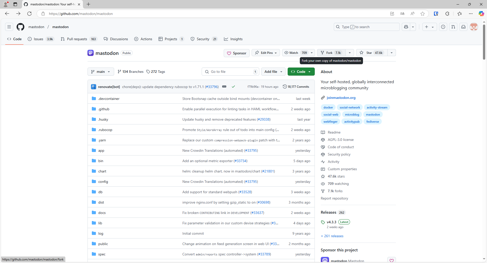
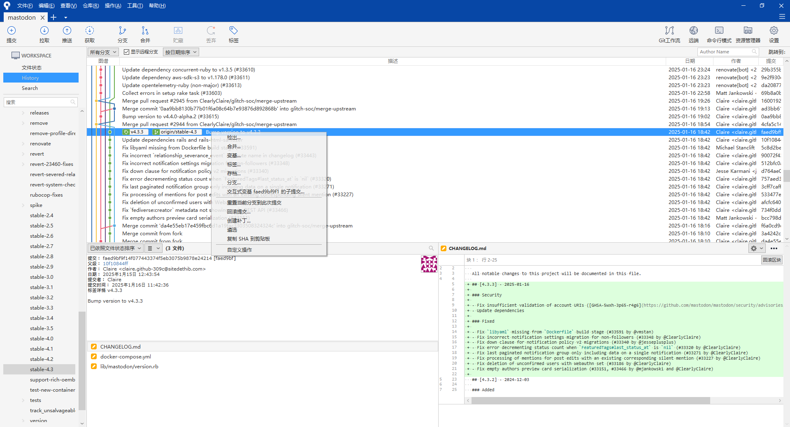

本博客作为技术博客，已部署了搜索功能*（虽然不敢保证是由有用）*。但是，有更多的资源我记录或收藏在了长毛象里，经过长时间高频率地使用，很容易就会被淹没在茫茫信息之中。没有搜索功能，在需要时（就比如写本博客、寻找收藏的小姐姐🤤、分享某些象友的经典言论）就只能手动去一一翻找。所以，没有搜索功能很不方便，我们需要部署全文搜索。
面向的读者
跟前一篇不同，本篇理论上不适合所有读者。适合的人群须满足：
- 确有需要并且有技术自建长毛象实例的
- 对自己实例的使用体验和自己的运维水平有一定的追求
- 想要以后开始学习给长毛象项目做贡献，或开发自己的长毛象变种，就像https://github.com/TheEssem/mastodon 一样
需要的基础知识
- 熟练掌握Linux服务的重启
- Ubuntu的软件安装与卸载
- 掌握一定的Linux系统知识
- 通读长毛象的官方文档
长毛象的安装
长毛象的迁移（备份）
长毛象的开发
长毛象部署全文搜索
前提条件
首先，你要有个未部署全文搜索的长毛象实例（网页端搜索是灰色/无法点击的），最好是官方实例，没魔改过的更好。如果魔改过，说明你对长毛象的代码理解水平在我之上，也不需要我担心。如果不是官方实例，那么请熟读该魔改版本作者写的文档！
如果你已部署了全文搜索，也不必急着走，可以跳到本文后半部分。
开始部署
官方文档https://docs.joinmastodon.org/admin/elasticsearch/ 已给出非常具体的操作方法，除了这一部分以外，完全照做一遍都没有问题。根据某象友的实践，当前版本早已不需要优化即可进行中文搜索。
但是， 在这种情况下，你无法用中文搜索找到简繁不一致的内容。这时，你就需要优化。如果你没有上述需求，那么现在就可以出门左转了。
笔者踩了好几天的坑，发现如果需要进行中文搜索的优化，你不应该按照官方文档进行操作，而是应该如下进行操作。但是官方文档仍有巨大的参考价值。
首先需要安装依赖
小知识
提示符为#时，代表以root权限执行，为$时，代表以普通用户权限执行
1 | # apt install openjdk-17-jre-headless |
接下来的操作，与官方文档不同，如果已经安装官方文档操作，则需要彻底删除elasticsearch。
1 | # wget -O /usr/share/keyrings/elasticsearch.asc https://artifacts.elastic.co/GPG-KEY-elasticsearch |
注意：要把官方文档的版本号改为8.x。
接下来，更新软件源，并安装Elasticsearch 8.4.1 。如果不安装该版本，官方最稳定的analysis-ik将无法正常安装！
1 | # apt update |
安装完毕后，执行以下命令启动Elasticsearch。
1 | # systemctl daemon-reload |
小踩坑点： 以上命令跳过第一条则无法启动第二条。在top中，elasticsearch以java进程的形式运行。
大踩坑点： 如果之前安装过其他版本的Elasticsearch，就比如按照官方文档的步骤按照了Elasticsearch 7.x版本，则这一步可能失败。验证方式：
1 | $ systemctl status elasticsearch |
卸载旧版Elasticsearch的方法
有点Linux经验的小伙伴，会知道一个办法：
1 | # apt remove elasticsearch |
但是这样会保留配置文件。如果卸载不干净，则重装过后依然无法启动。
正确的卸载方式：
1 | # apt purge elasticsearch |
之后查找一下elasticsearch在本机留下的痕迹
1 | # updatedb |
如果生产环境（在你的实例中，而不是在测试环境或虚拟机中）中更新索引updatedb，则可能因为文件系统过于庞大而没有响应。所以这种情况下，一般来说，只要再删除/var/lib/elasticsearch就可以了
1 | # rm -r /var/lib/elasticsearch |
目前我只能帮到这里了，如果还是无法删干净，或新版Elasticsearch无法正常使用，请自行搜索资料，或重装系统。重装系统后仍无法使用，那就排除这个原因。
解决内存不足导致的问题
一般来说，根据官方文档对长毛象实例进行配置以后，发生的问题往往跟内存不足有关。官方文档已给出解决方法。
如果内存仍然不足，则需要分配虚拟内存。以下给出实用的方法：
查看交换空间
1 | # swapon --show |
分配内存文件（在系统盘）
1 | # fallocate -l 4G /swapfile |
设置文件权限
1 | # chmod 600 /swapfile |
格式化虚拟内存文件
1 | # mkswap /swapfile |
挂载虚拟内存（立即生效，关机后失效）
1 | # swapon /swapfile |
重启后挂载虚拟内存
打开/etc/fstab
1 | # vim /etc/fstab |
在文件最后添加以下内容，并保存退出
1 | /swapfile none swap defaults 0 0 |
重新分配虚拟内存
卸载虚拟内存
1 | # swapoff /swapfile |
调整虚拟内存文件大小
1 | # fallocate -l 1G /swapfile |
重新格式化虚拟内存文件（否则改动不生效！）
1 | # mkswap /swapfile |
重新挂载虚拟内存
1 | # swapon /swapfile |
以上操作在解决长毛象实例部署时，内存不足导致的编译失败，也很有用。因为VPS系统资源很贵，所以以上内容我另外打了tag，并且希望你们划重点。
防止Elasticsearch 自动更新
由于本文根据需要进行了指定版本安装，所以今后你们应该不会手欠去apt upgrade的吧。
不过以防万一，要对该软件进行固定。
禁止elasticsearch的自动更新
1 | # apt-mark hold elasticsearch |
检查被禁止更新的软件列表
1 | # apt-mark showhold |
解除禁止elasticsearch的自动更新
1 | # apt-mark unhold elasticsearch |
参考链接 https://blog.csdn.net/liaowenxiong/article/details/118962873
优化中文搜索
在改长毛象代码之前，必须先安装插件，否则会导致全文搜索变得无法使用。
安装插件
正如上文所言，安装插件可以按照官方文档进行操作。
插件官方文档如下：
简繁转换插件 https://github.com/infinilabs/analysis-stconvert
安装命令
1 | bin/elasticsearch-plugin install https://get.infini.cloud/elasticsearch/analysis-stconvert/8.4.1 |
分词插件 https://github.com/infinilabs/analysis-ik
安装命令
1 | bin/elasticsearch-plugin install https://get.infini.cloud/elasticsearch/analysis-ik/8.4.1 |
小坑： 但是官方文档有一点没有说清楚，所有插件的安装命令都需要在elasticsearch的安装目录下执行。而使用apt包管理器安装的elasticsearch，则在以下目录执行以上官方文档的安装命令。
1 | # cd /usr/share/elasticsearch |
长毛象代码魔改
接下来就到了本博客第一次解说长毛象魔改的时间了。长毛象要想使用ES插件，必须修改代码。
由于长毛象的开源协议，你修改代码后，必须在首页的源代码处公开自己修改后的代码。你不遵守这个协议，其实也无所谓，守规矩的人应该都在刷微信、微博、哔哩哔哩、学习强国。但是本着分享知识，记录备份代码的原则，我还是把代码放在GitHub上。其实这点轻改，在shell上就可以完成，但是以后还是会有相对重度的魔改，也可能会参与开发和调试，所以以下步骤是入门长毛象魔改的第一步。
fork仓库
登录GitHub,进入长毛象仓库https://github.com/mastodon/mastodon ，单击Fork

可以克隆所有分支
修改配置文件
在配置文件加一行
1 | GITHUB_REPOSITORY=dongzhimin-xz/mastodon |
改成你的用户名和长毛象仓库名称
clone仓库
如图复制本仓库地址
用sourcetree克隆仓库
搭建测试环境
安装开发测试软件
这里可以完全参照官方的开发文档进行环境配置。需要从官网下载两个软件用于开发（如果已有，则可跳过此步骤）
https://www.vagrantup.com/
https://www.virtualbox.org/
我觉得在Windows中，vagrant-hostupdater似乎没什么用，我都是自己手动配置的hosts文件。以防有人不会，我再赘述一遍：用管理员权限打开记事本，打开C:\Windows\System32\drivers\etc\hosts,增加一行：
1 | 192.168.42.42 mastodon.local |
安装运行长毛象的代码
检出你要魔改的分支，我选择的是我正在运行的分支，也就是稳定版，而不是main分支。

在资源管理器打开代码目录，右键在此处打开命令行。右键找不到终端选项，则按Shift+鼠标右键，或在地址栏输入cmd，在此处打开命令行。
在命令行输入
1 | vagrant up |
这里根据我个人经验，需要等半小时以上。它进行的操作，是创建虚拟机，安装依赖，安装Elasticsearch等大量软件。由于国内的网络环境（你懂得），安装elasticsearch时间占大头。
命令提示符重新出现后，再运行如下最实用的 代码
1 | vagrant ssh -c "cd /vagrant && foreman start" |
经过我长时间的多次使用，知道了它的作用是进入长毛象代码根目录，并执行foreman start命令。在开发过程中，如果你已经用vagrant ssh进入了虚拟机，那么你就可以用foreman start启动开发环境。如果提示没有安装，那么你可以先执行gem install foreman --no-document。官方文档都有记载。
foreman的意义就在于直接编译代码，当你保存了代码时，它会根据依赖关系重新进行编译，重启服务，并刷新你的浏览器。可谓时按一下保存，就可以看见你改代码的效果。
但是，如果你checkout到了其他版本的分支，你需要进入/vagrant目录，执行bundle install和yarn install命令，再执行
1 | gem install foreman --no-document |
修改完成后，将代码git push到你的仓库，再登录到你服务器的mastodon账户下。假设你按照官方文档长毛象的安装部署了你的实例。执行如下命令：
1 | $ cd live |
其中，<your_github_account>/mastodon为你长毛象仓库名称。
再执行
1 | $ git fetch --tags |
最后执行git checkout到你修改后的分支。
接下来执行
1 | $ RAILS_ENV=production bundle exec rails assets:precompile |
重新编译。回到root账号，重启所有长毛象服务。
当然，在执行服务器上的操作之前，你应该先根据官方的长毛象迁移（备份）文档，在mastodon账户执行
1 | $ pg_restore -Fc -j# -U mastodon -n public --no-owner --role=mastodon \ |
中文搜索优化
**官方文档**已给出了代码的修改方案，但是这个代码经过我的实测，效果并不好。主要体现在：在我将它部署到服务器上以后，根据官方文档执行bin/tootctl search deploy之后，就会发现所有索引建立完成后的一切新嘟文，都无法被搜索到！这个可能是因为它无法自动把新嘟文加入到索引中。经过我反复试验，发现是官方文档中的ik_max_word有问题。我没有时间和能力进行更进一步的调试和研究，经过黑盒测试，不使用长毛象官方文档中的analyzer/tokenizer ik_max_word最好。
最佳代码修改
1 | diff --git a/app/chewy/accounts_index.rb b/app/chewy/accounts_index.rb |